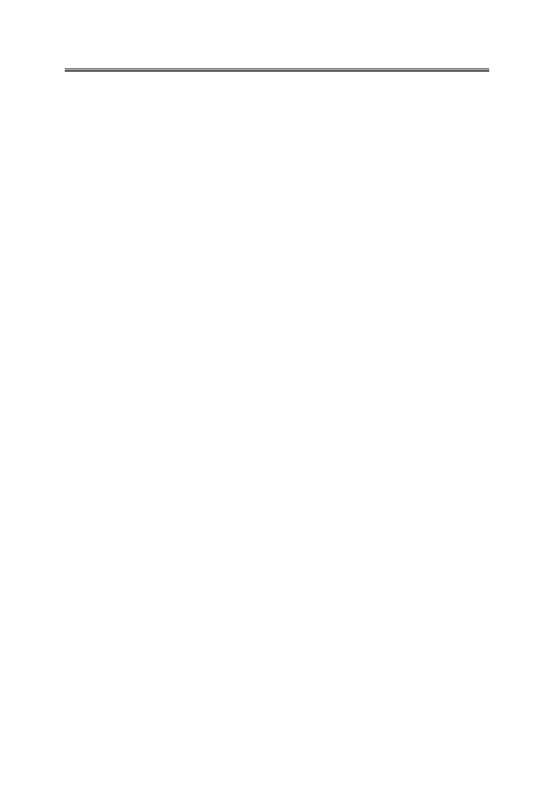

Метод затухающего потока в реологии полимерных пористых пленок, заполненных жидкими
кристаллами
сдвиговой вязкости для образцов пористых пленок с различными диаметрами пор и вы-
полнен анализ экспериментальных данных с учетом возможного существования различ-
ных ориентационных структур НЖК внутри пор субмикронного диаметра.
Благодарность: работа поддержана грантом РФФИ № 16-33-00802 мол_а.
Литература:
1. де Жен П. Физика жидких кристаллов. М.: Мир, 1977. 400 с.
2. Kutnjak Ž., Kralj S., Lahajnar G., Žumer S. Calorimetric study of 8CB liquid crystal
confined to controlled-pore glasses // Phys. Rev. 2003. E 68. P. 021705-1–021705-11.
3. Semerenko D.A., Shmeliova D.V., Pasechnik S.V., Murauskii A.V., Tsvetkov V.A.,
Chigrinov V.G. Optically controlled transmission of porous polyethylene terephthalate films
filled with nematic liquid crystal // Optics Lett. 2010.V. 35. № 13. P. 2155–2157.
4. Chopik A.P., Pasechnik S.V., Semerenko D.A., Shmeliova D.V., Dubtsov A.V., Srivastava
A.K., Chigrinov V.G. Electro-optical effects in porous PET films filled with liquid crystal: new
possibilities for fiber optics and THZ applications // Optics Lett. 2014.V. 39. № 6. P. 1453–1456.
5. Chigrinov V.G. Liquid Crystal Devices: Physics and Applications. Artech House, 1999. 357 p.
6. Pasechnik S.V., Chopik A.P., Shmeliova D.V., Drovnikov E.M., Semerenko D.A.,
Dubtsov A.V., Zhangb W., Chigrinov V.G. Electro-kinetic phenomena in porous PET films
filled with liquid crystals // Liquid Cryst. 2015. V.7. P. 1537–1542.
7. Pasechnik S.V., Chigrinov V.G., Shmeliova D.V., Tsvetkov V.A., Voronov A.N.
Anisotropic shear viscosity in nematic liquid crystals: new optical measurement method //
Liquid Cryst. 2004. V. 31. P. 585–592.
8. Пасечник С.В., Крехов А.П., Шмелева Д.В., Насибуллаев И.Ш., Цветков В.А. Ори-
ентационная неустойчивость в нематическом жидком кристалле в затухающем пуазей-
левском потоке // ЖЭТФ. 2005. Т. 127. №. 4. С. 907–914.
9. Pasechnik S.V., Semina O. A., Shmeliova D. V., Dubtsov A.V., Chigrinov V. G., Jatong
D. V. Sun photocontrolled surfaces in rheology of liquid crystals // Mol. Cryst. Liq. Cryst. 2015.
V. 611. P. 81–89.
10. Pasechnik S.V., Shmeliova D.V., Semerenko D.A., Voronov A.N., Semina O.A. Modified
optical method for measurements of anisotropic shear viscosities of nematic liquid crystals //
Liquid Сrystals and Their Appl. 2011.V. 3(37). P. 41–46.
11. Barnik M.I., Belyaev S.V., Grebenkin M.F., Rumyantsev V.G., Seliverstov V.A.,
Tsvetkov V.A., Shtykov N.M. Electrical, optical and visco-elastic properties of the liquid crystal
mixture of azoxy // Crystallography. 1978. V. 23(4). P. 805–810.
12. Bradac Ž., Kralj S., Zumer S. Molecular dynamics study of nematic structures confined
to a cylindrical cavity // Phys Rev. 1998. E. 58(6). P. 7447–7454.
13. Crawford G.P., Allender D.W., Doane J.W. Surface elastic and molecular-anchoring
properties of nematic liquid crystals confined to cylindrical cavities // Phys. Rev. 1992. V. 45.
P. 8693–8708.
14. Allender D.W., Crawford G.P., Doane J.W. Determination of the liquid-crystal surface
elastic constant K24 // Phys. Rev. Lett. 1991. V. 67. P.1442–1445.
15. Tkachenko V., Dyomin A.A., Tkachenko G.V., Abbate G., Sukhoivanov I.A. Electrical
36
Российский технологический журнал 2017 Том 5 № 5